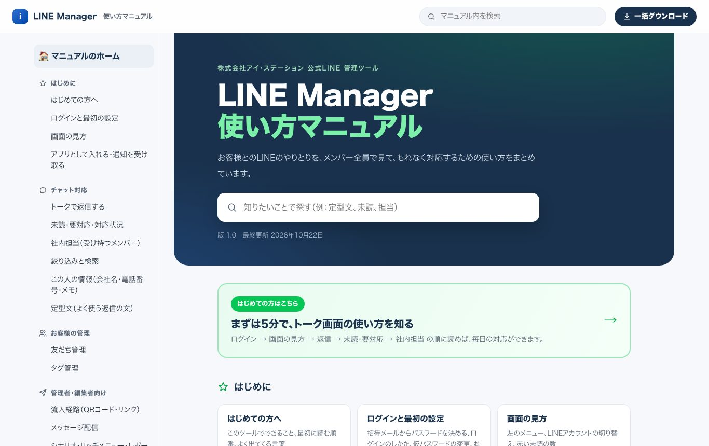
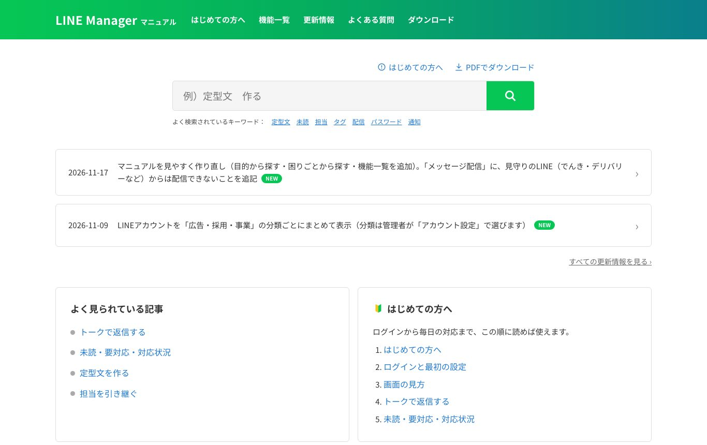
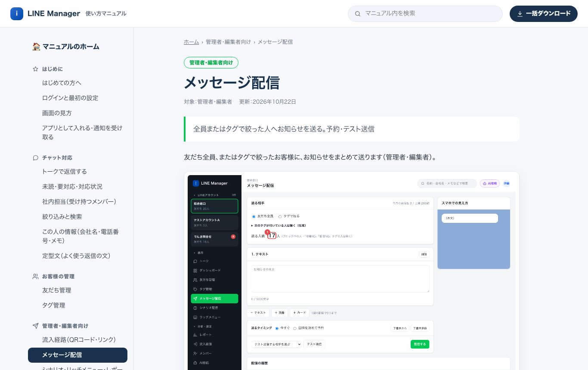
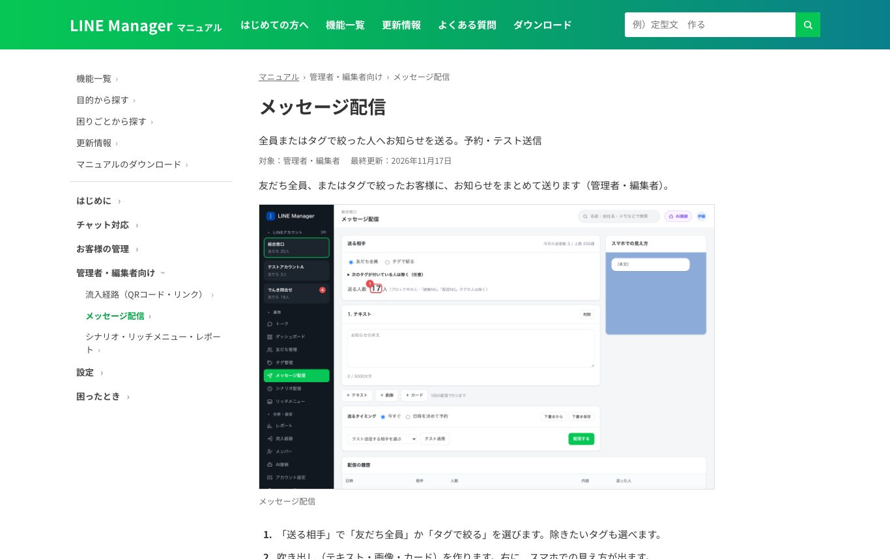

変わったところ
- トップに大きな検索と「よく検索されているキーワード」、更新情報、4つの入口（機能一覧／よくある質問／困りごとから探す／目的から探す）
- 「目的から探す」（18項目）と「困りごとから探す」（12項目）のページを追加。よくある質問の答えまで直接開く
- 記事ページは「目次 → 手順 → 画面写真」の流れ。注意は黄色、補足は水色で色分け
- 「メッセージ配信」に、見守りのLINE（でんき問合せなど）からは配信できないことを追記
- 本文と画面写真（全17ページ）はそのまま
トップページ


記事ページ（例：メッセージ配信）

